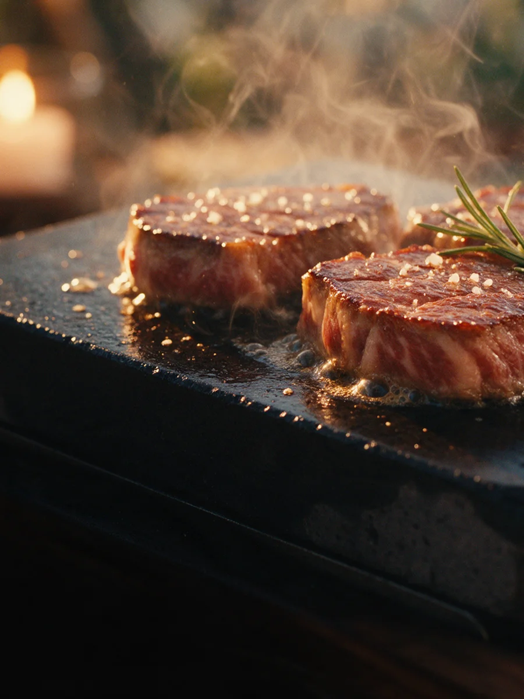
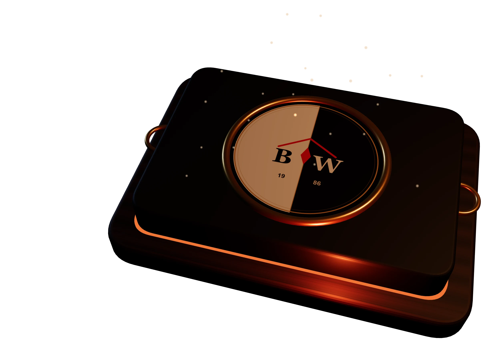
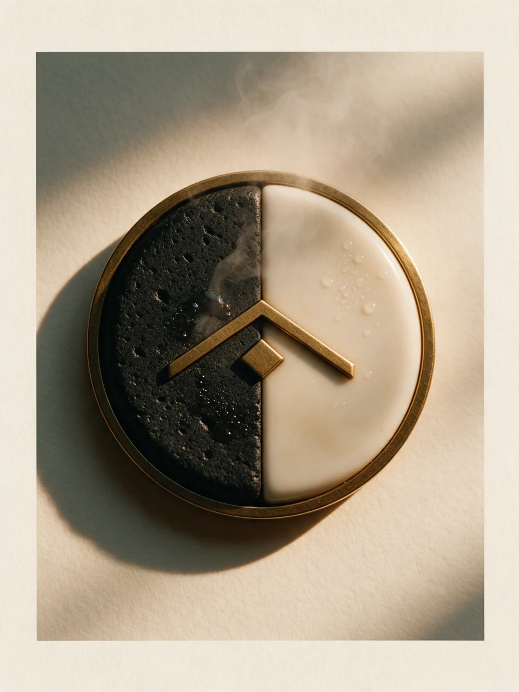
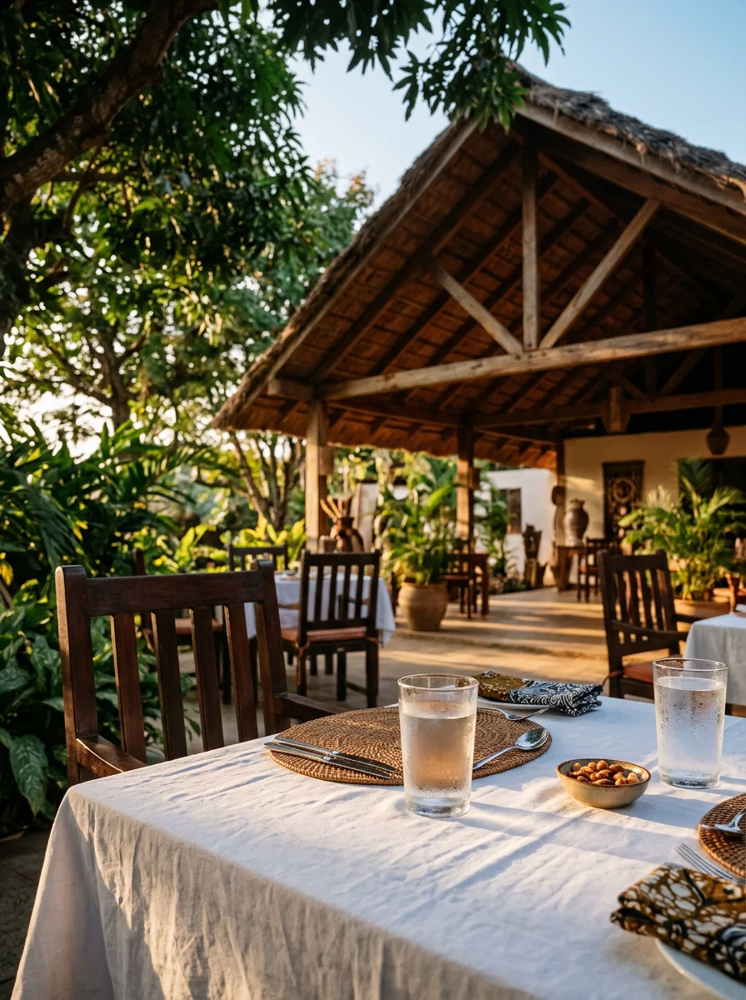
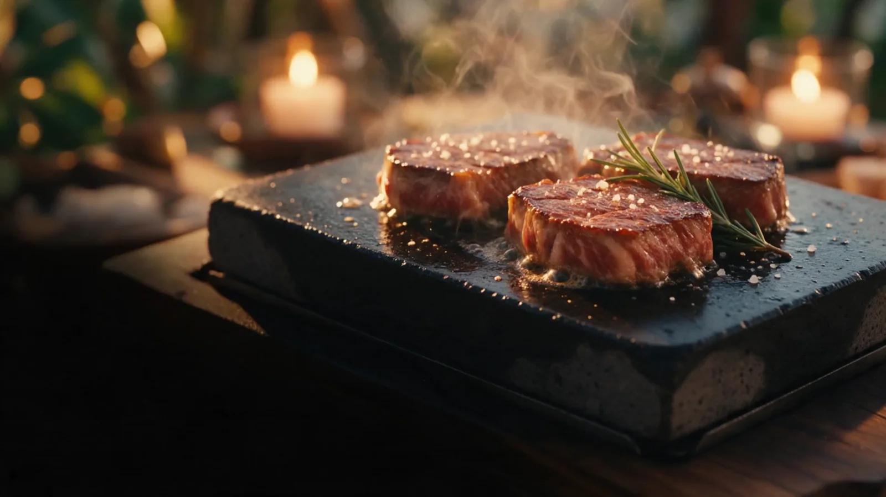
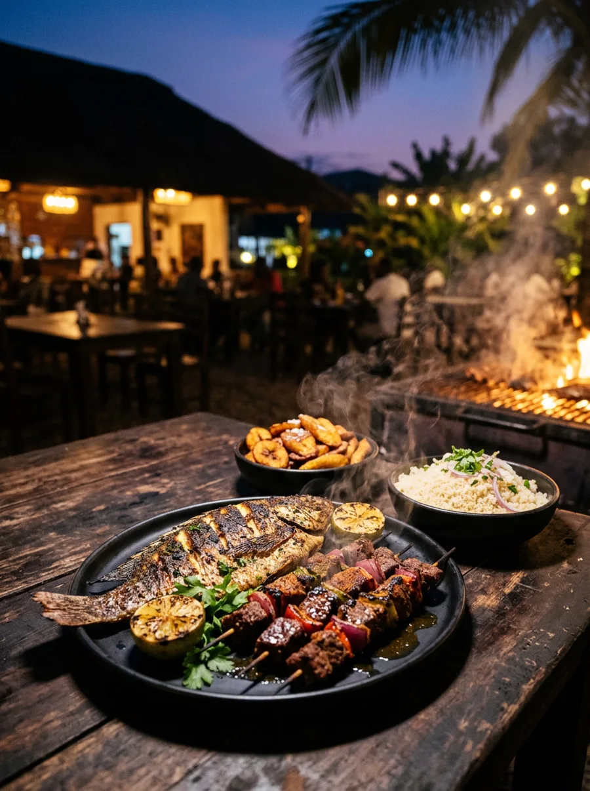
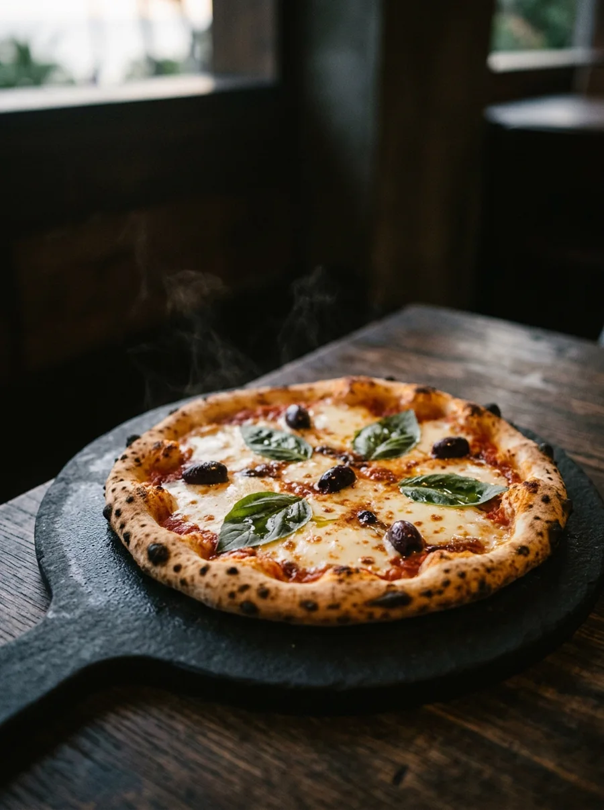
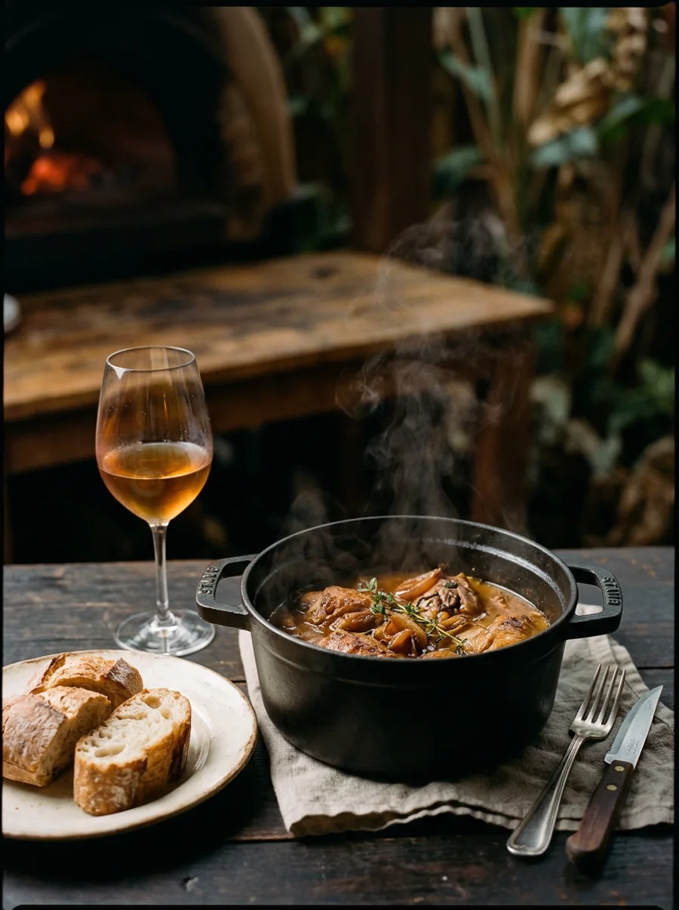

La Pierrade
Bœuf tendre ou poisson saisi minute à votre table sur basalte chaud, beurre persillé et garniture au choix.

Bouaké, quartier Nimbo · Depuis 1986
Depuis 1986 sur l'avenue Jacques Aka, on y partage pierrades, grillades, pizzas et cuisine franco-ivoirienne.
Quand la chaleur monte sur Bouaké, on pousse le portail de l'avenue Jacques Aka pour retrouver l'air qui circule sous la grande charpente de bois. Les familles s'installent sous les arbres pour le déjeuner, les habitués prolongent le dîner le soir, et ceux qui préfèrent la fraîcheur fermée prennent place au bar climatisé.
La maison garde les mêmes repères depuis son ouverture en 1986 : un parking privé dans l'enceinte, un accueil attentif qui connaît ses classiques, et une carte assez généreuse pour réunir toutes les envies autour de la même nappe blanche.

Le nom de la maison réunit deux matières et deux ambiances : la pierre noire brûlante et la nappe blanche, la brise du jardin arboré et l'intimité fraîche du bar.


Le basalte sort du four chauffé à bloc. Le beurre persillé grésille dès que la tranche touche la pierre, avec le romarin frais et la fleur de sel devant vous.
La pierre volcanique arrive du four sur son plateau de bois. Le beurre aux herbes commence à fondre.
Entre spécialités ivoiriennes, classiques français, grillades et pizzas, tamponnez ce qui vous tente : vos choix rejoignent directement votre bon de réservation en bas de page.

Bœuf tendre ou poisson saisi minute à votre table sur basalte chaud, beurre persillé et garniture au choix.

Poissons entiers braisés, brochettes marinées et viandes grillées au feu, accompagnés d'attiéké frais ou d'alloco.

Pâte fine et croustillante dorée au four, sauce tomate maison, fromage filant, olives noires et basilic frais.

Plats mijotés ivoiriens et cuisine française de tradition. Comptez moins de 20 000 FCFA par personne pour un repas complet.
Avant de passer sous l'apatam, le bar climatisé sert rafraîchissements, apéritifs et bouteilles choisies à l'abri de la chaleur.
Le Black and White · Bouaké
L'action ouvre WhatsApp vers le +225 05 05 92 60 80 avec votre bon pré-rempli afin que l'équipe vous confirme la table directement.
Que vous soyez de Bouaké ou de passage dans le centre du pays, passez le portail à Nimbo pour déjeuner au frais ou dîner devant la pierre chaude.
Avenue Jacques Aka, Quartier Nimbo (près de la BCEAO), Bouaké, Côte d'Ivoire.
Parking privé disponible sur place.
Du mardi au dimanche : 11h00 à 15h00 et 18h00 à 22h30.
Fermé le lundi.